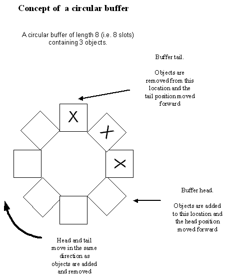

|
| |
"Circular Buffers" is a sub-API of the "Buffers and strings" API.
A circular buffer provides a simple way of implementing a fixed length queue of fixed size objects where objects are added to the head of the queue while items are removed from the tail of the queue.
Logically, the buffer is circular with no defined start or end. Objects are always added to the buffer head and are always removed from the buffer tail. The buffer head is always the next vacant slot into which an object is added. The buffer tail is always the slot from which the next object is removed. The tail always logically follows the head and the implementation ensures that the tail never overtakes the head.

Physically, the buffer is a contiguous block of memory. The implementation provides the appearance of circularity.
A circular buffer has a maximum capacity which must be set before the circular buffer can be used. The maximum capacity can be changed at any time but any existing data within the buffer is lost.
The sub-API consists of three classes, two of which can be instantiated:
the templated class CCirBuf<class T> builds a
circular buffer of general objects.
the CCirBuffer class builds a circular buffer of
unsigned integers with values ranging from -128 to +128.
Copyright ©2002 Symbian Ltd. 6.1-00174 |
|